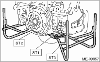

MECHANICAL(H4DO) > Preparation for Overhaul
1. After removing the engine from body, secure it to ST in the following procedure.
| ST1 498457000 | ENGINE STAND ADAPTER RH |
| ST2 498457100 | ENGINE STAND ADAPTER LH |
| ST3 499817100 | ENGINE STAND |

2. In this section the procedures described under each index are all connected and stated in order. The procedure for overhauling of the engine will be completed when you go through all steps in the process.
Therefore, in this section, to conduct the particular procedure within the flow of a section, you need to go back and conduct the procedure described previously in order to do that particular procedure.